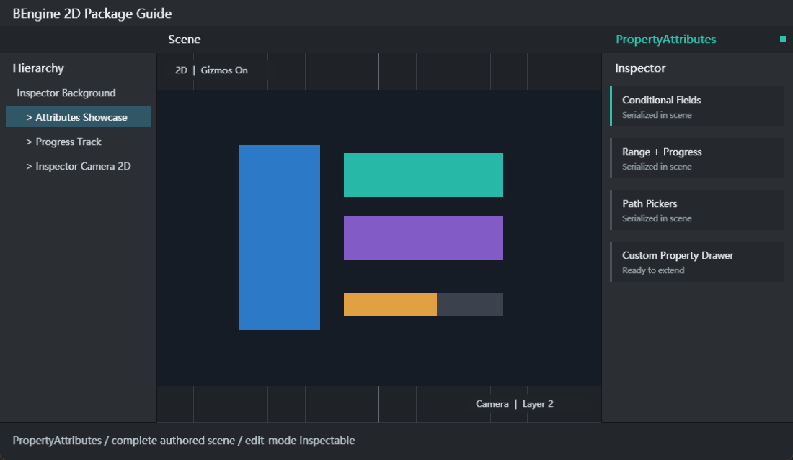

声明式 Inspector
组件字段通过 Attribute 组合界面，无需为每个组件编写 CustomEditor。
GPU IMGUI INSPECTOR METADATA
该包为 SerializedProperty Inspector 提供条件显示、验证、标签、路径、下拉、数值约束、进度条与内联操作。运行时只携带 Attribute 元数据，所有绘制位于 Editor 程序集。
组件字段通过 Attribute 组合界面，无需为每个组件编写 CustomEditor。
Runtime 脚本只引用 BEngine.PropertyAttributes，不引用 BEngine.Editor。
条件、Provider、Validator 和 Action 均从目标实例解析并校验签名。
项目可定义 PropertyAttribute，并在 Editor 程序集用 CustomPropertyDrawer 自动注册。

| 项目 | 值 | 说明 |
|---|---|---|
| 包 ID | com.bengine.property-attributes | 在 Package Manager 启用 |
| 运行时程序集 | BEngine.PropertyAttributes | Attribute 类型，不含 UI 代码 |
| 编辑器程序集 | BEngine.PropertyAttributes.Editor | ExtendedPropertyDrawer |
| 依赖 | BEngine | 不依赖 UIElements |
| 组件/资源 | 无 | 作用于任意可序列化 Component 或 BAsset 字段 |
BEngine.PropertyAttributes。BEngine.Editor 和运行时程序集。| 示例 | 导入目录 | 场景 | 内容 |
|---|---|---|---|
| Inspector Attributes and Drawer | Assets/Examples/InspectorAttributesAndDrawer | res/PropertyAttributes.scene.yaml | 内置属性与 PercentAttribute/PercentDrawer |
| Attributes Gallery | Assets/Examples/AttributesGallery | res/AttributesGallery.scene.yaml | 条件、验证、Dropdown、路径与 InlineButton 画廊 |
Assets/Examples/.../res/*.scene.yaml。本包没有自有 Component、Scene System 或 BAsset 资源格式；它扩展的是任意组件或资源的可序列化字段。下表是公开字段元数据契约。
| 属性 | 参数/支持类型 | 行为 |
|---|---|---|
| Title | title, subtitle / 任意 | 字段前显示标题和可选副标题 |
| InfoBox | message, messageType, visibleIf / 任意 | 显示 Info、Warning 或 Error |
| LabelText | label / 任意 | 替换默认显示名 |
| Indent | level / 任意 | 增加非负缩进 |
| ShowIf / HideIf | conditionMember, expectedValue | 按实例成员显示或隐藏 |
| EnableIf / DisableIf | conditionMember, expectedValue | 按实例成员启用或禁用 |
| ReadOnly | 任意 | 显示但禁止编辑 |
| Required | string、BObject、可空引用 | null、空白或失效引用时显示错误 |
| ValidateInput | validatorMember, message, messageType | 调用 bool M() 或 bool M(T) |
| Clamp | minimum, maximum / Integer、Float、Fix64 | 提交后限制上下界 |
| MaxValue | maximum / Integer、Float、Fix64 | 限制最大值 |
| Core Range | min, max / Integer、Float、Fix64 | Slider 或 IntSlider |
| MinMax | minimum, maximum / Vector2 | X/Y 最小最大值并保持顺序 |
| ProgressBar | minimum, maximum, title, editable / Float、Fix64 | 绘制可选编辑的进度条 |
| Dropdown | 固定 choices 或 providerMember / string、enum | 固定或动态 IEnumerable 选项 |
| Password | mask / string | 遮罩输入 |
| FilePath | title, filter, relativeToProject / string | 文件选择器 |
| FolderPath | description, relativeToProject / string | 文件夹选择器 |
| AssetPath | extension / string | 从 Assets 起始并按后缀过滤 |
| InlineButton | methodName, label / 任意 | 调用实例 void M() 或 void M(T) |
| HorizontalLine | thickness, color | 类型已定义，当前 Drawer 未专门绘制 |
| Prefix / Suffix | text | 类型已定义，当前 Drawer 未专门绘制 |
| EnumFlags | enum | 类型已定义，当前 Drawer 未提供位掩码控件 |
using System.Collections.Generic;
using BEngine;
using BEngine.PropertyAttributes;
[AddComponentMenu("Gameplay/Character Settings")]
public sealed class CharacterSettings : MonoBehaviour
{
[Title("角色", "条件、验证与操作")]
[Required("名称不能为空")]
[LabelText("显示名称")]
public string displayName = "Hero";
public bool advanced = true;
[ShowIf(nameof(advanced))]
[Range(0, 20)]
[Clamp(1, 12)]
public Fix64 speed = 5;
[Dropdown(nameof(Profiles), true)]
public string profile = "Balanced";
[ValidateInput(nameof(IsPositive), "等级必须大于 0")]
public int level = 1;
[ProgressBar(0, 100, "生命")]
[InlineButton(nameof(Heal), "回满")]
public Fix64 health = 75;
private IEnumerable<string> Profiles =>
new[] { "Balanced", "Quality", "Performance" };
private bool IsPositive(int value) => value > 0;
private void Heal() => health = 100;
}| API | 程序集 | 用途/注册 |
|---|---|---|
ExtendedPropertyAttribute | Runtime | 内置属性共同基类，由 ExtendedPropertyDrawer 匹配子类 |
ValidationMessageType | Runtime | Info、Warning、Error |
SerializedObject.FindProperty | Editor | 取得字段代理 |
SerializedProperty.propertyType/boxedValue | Editor | 检查类型并统一读写 |
EditorGUI.PropertyField | Editor | 使用 Registry 选择 Drawer |
EditorGUI.DefaultPropertyField | Editor | 不支持类型时安全回退 |
PropertyDrawer.OnGUI | Editor | 绘制字段 |
PropertyDrawer.GetPropertyHeight | Editor | 报告稳定布局高度 |
[CustomPropertyDrawer] | Editor | 程序集加载后自动注册，无需手工 Registry 调用 |
using System;
using BEngine;
[AttributeUsage(AttributeTargets.Field | AttributeTargets.Property)]
public sealed class PercentAttribute : PropertyAttribute;using System;
using BEngine;
using BEngine.Editor;
[CustomPropertyDrawer(typeof(PercentAttribute))]
public sealed class PercentDrawer : PropertyDrawer
{
public override void OnGUI(
Rect position, SerializedProperty property, GUIContent label)
{
if (property.propertyType != SerializedPropertyType.Float)
{
EditorGUI.DefaultPropertyField(
position, property, label, includeChildren: true);
return;
}
var percent = Math.Clamp(property.floatValue * 100f, 0f, 100f);
property.floatValue = EditorGUI.Slider(
position, $"{label.text} (%)", percent, 0f, 100f) / 100f;
}
}[CustomPropertyDrawer] 是注册方式。Editor asmdef 必须引用定义 PercentAttribute 的运行时程序集；程序集重载后 Registry 会重新扫描。
| 现象 | 检查与处理 |
|---|---|
| 属性不生效 | 包启用、运行时 asmdef 引用、字段可被 SerializedObject 枚举 |
| ShowIf 总隐藏 | 成员位于同一实例，名称和 expectedValue 类型正确 |
| Dropdown 为空 | Provider 返回 IEnumerable，且不是静态/带参数/void 方法 |
| Validator 总失败 | 签名为 bool M() 或 bool M(T)，方法不抛异常 |
| InlineButton 不执行 | 签名为实例 void M() 或 void M(T) |
| Clamp 不处理 Vector2 | Clamp 只处理 Integer/Float/Fix64，Vector2 使用 MinMax |
| 路径不是工程相对路径 | 检查 relativeToProject；AssetPath 默认从 Assets 打开 |
| 自定义 Drawer 不出现 | Editor 程序集、公开无参构造、CustomPropertyDrawer 和 asmdef 引用 |
| 控件布局重叠 | GetPropertyHeight 包含所有额外行，OnGUI 不越过分配 Rect |
| HorizontalLine/Prefix/Suffix/EnumFlags 无视觉变化 | 当前仅定义元数据，尚无专用绘制 |
| 停止 Play 后值丢失 | Play 使用运行镜像；持久化修改在 Edit Mode 完成 |